20 màn hình · 84 trạng thái. Mở từng màn để xem đủ trạng thái, đặc tả và bản wireframe.
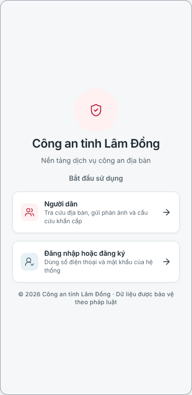
2 trạng thái · Điện thoại
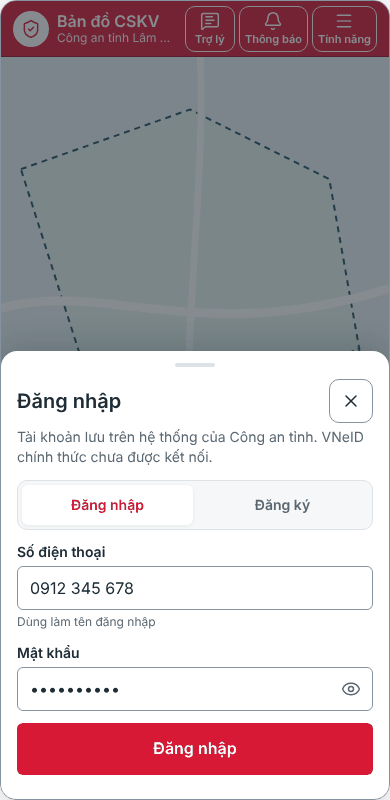
6 trạng thái · Điện thoại
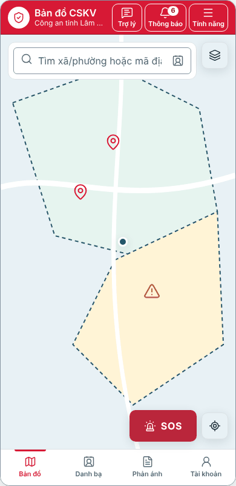
5 trạng thái · Điện thoại
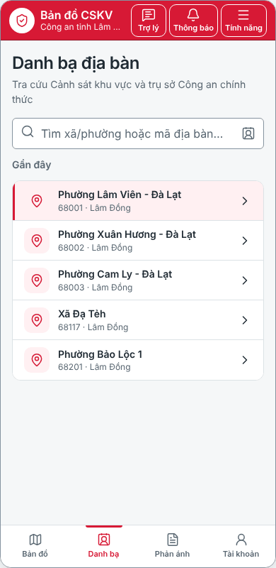
4 trạng thái · Điện thoại
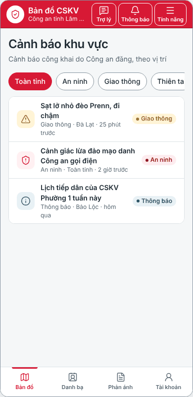
4 trạng thái · Điện thoại
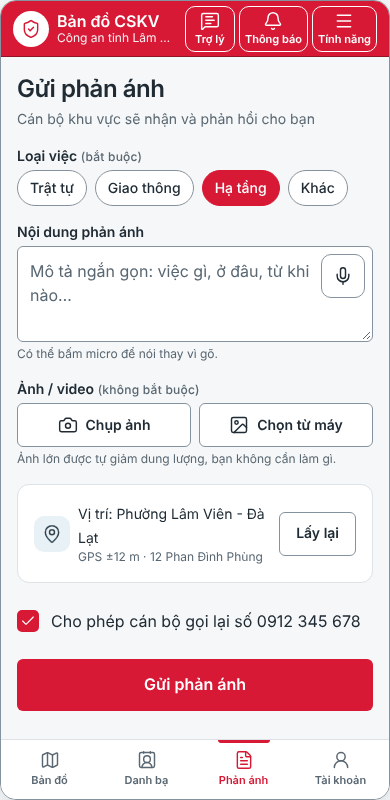
7 trạng thái · Điện thoại
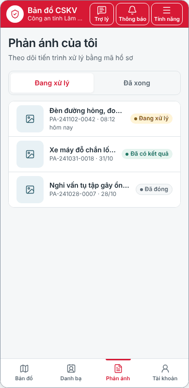
5 trạng thái · Điện thoại
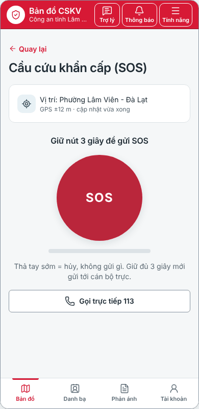
7 trạng thái · Điện thoại
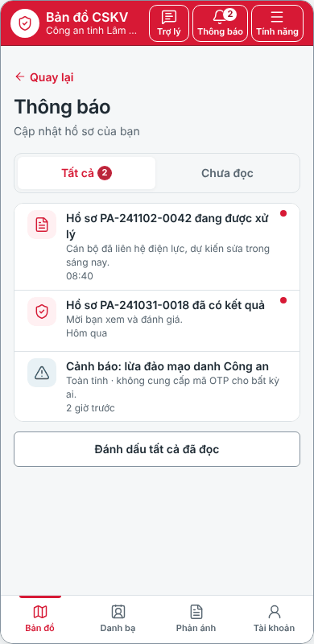
5 trạng thái · Điện thoại
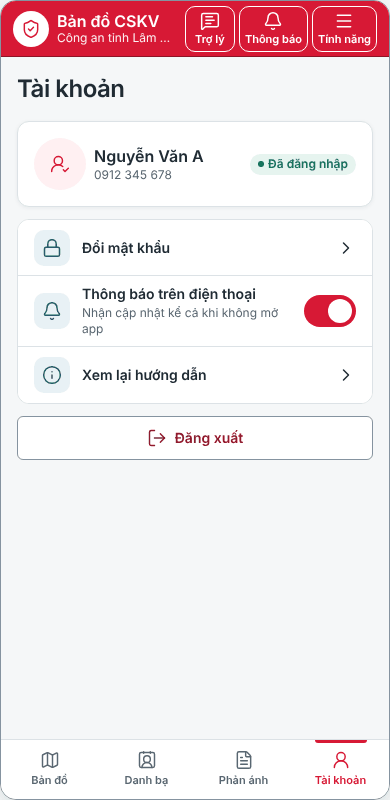
3 trạng thái · Điện thoại
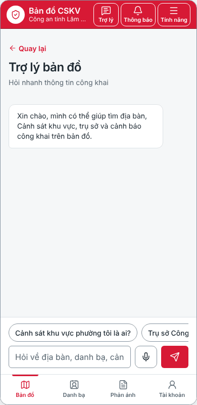
4 trạng thái · Điện thoại
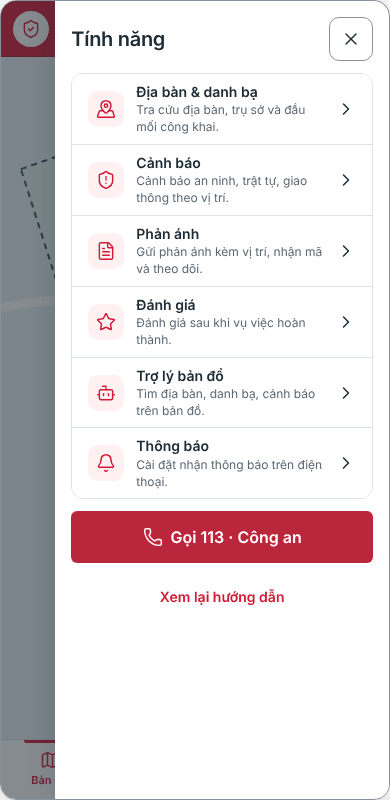
1 trạng thái · Điện thoại
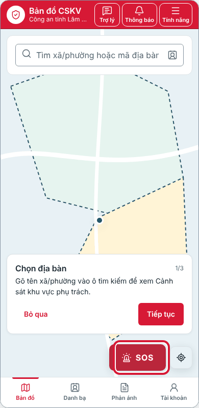
3 trạng thái · Điện thoại
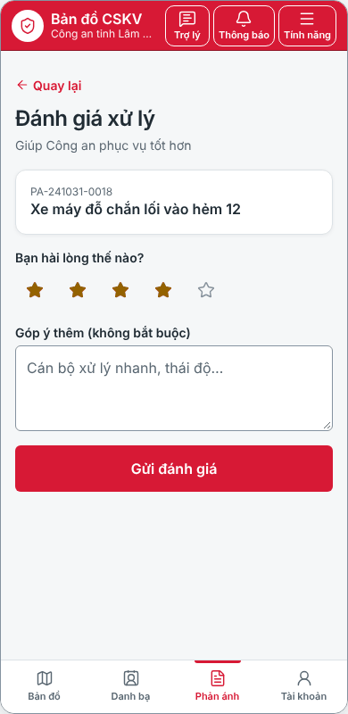
3 trạng thái · Điện thoại
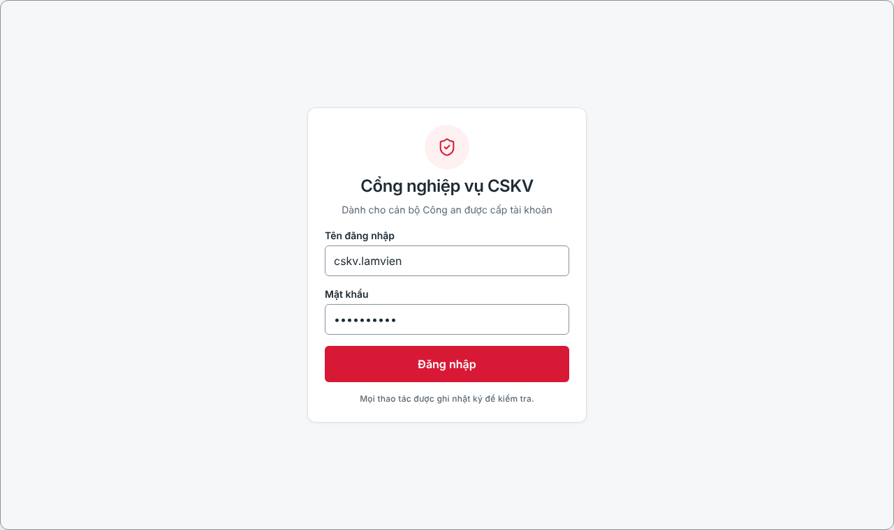
4 trạng thái · Máy tính
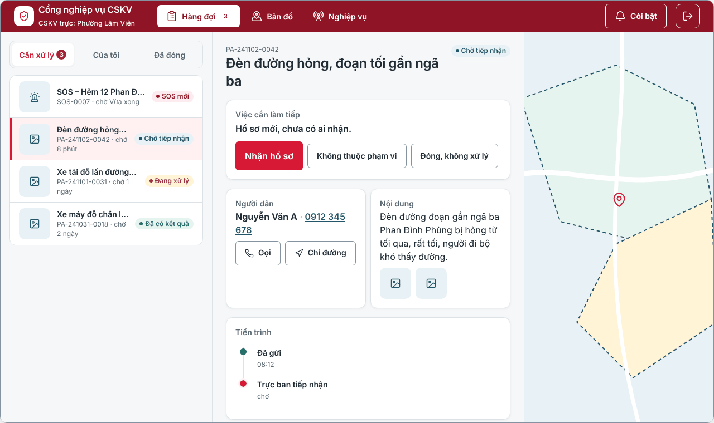
10 trạng thái · Máy tính
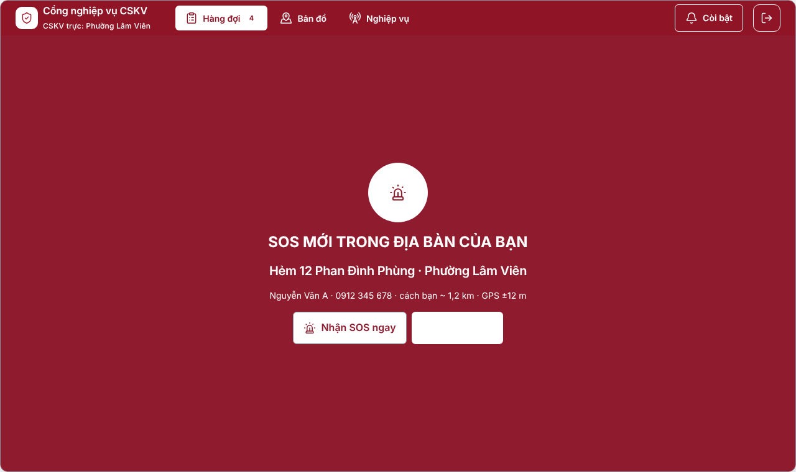
2 trạng thái · Máy tính
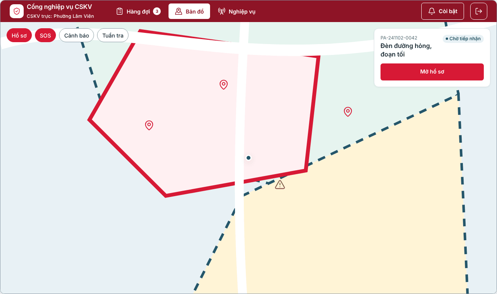
1 trạng thái · Máy tính
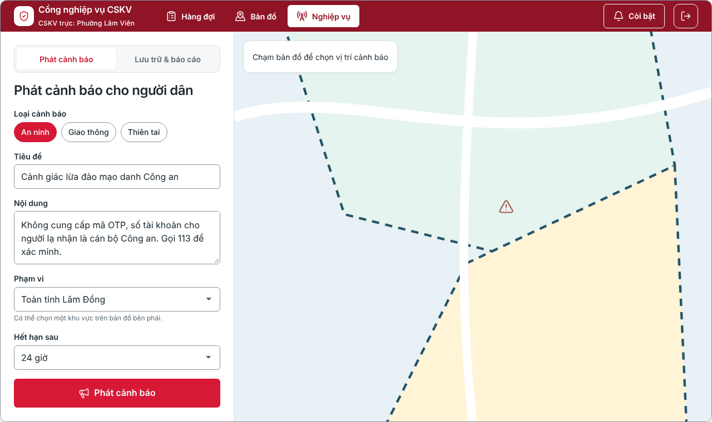
4 trạng thái · Máy tính
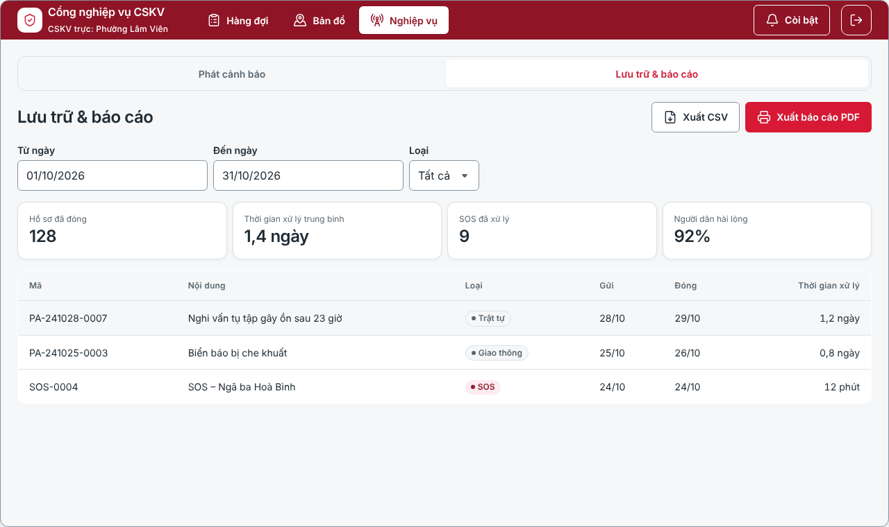
4 trạng thái · Máy tính